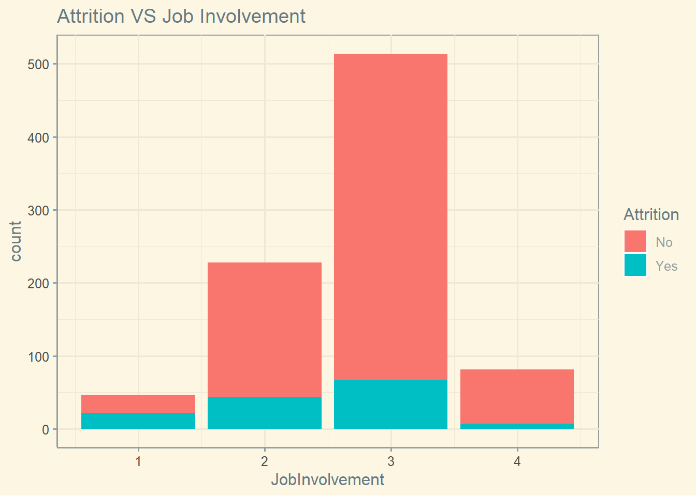

library(tidyverse)## ── Attaching packages ────────────────────────────────────────────────────────────────────────────────────────────────────────────────────────────── tidyverse 1.3.2 ──
## ✔ ggplot2 3.4.0 ✔ purrr 1.0.0
## ✔ tibble 3.1.8 ✔ dplyr 1.0.10
## ✔ tidyr 1.2.1 ✔ stringr 1.5.0
## ✔ readr 2.1.3 ✔ forcats 0.5.2
## ── Conflicts ───────────────────────────────────────────────────────────────────────────────────────────────────────────────────────────────── tidyverse_conflicts() ──
## ✖ dplyr::filter() masks stats::filter()
## ✖ dplyr::lag() masks stats::lag()library(fpp)## Loading required package: forecast
## Registered S3 method overwritten by 'quantmod':
## method from
## as.zoo.data.frame zoo
## Loading required package: fma
##
## Attaching package: 'fma'
##
## The following object is masked _by_ '.GlobalEnv':
##
## beer
##
## Loading required package: expsmooth
## Loading required package: lmtest
## Loading required package: zoo
##
## Attaching package: 'zoo'
##
## The following objects are masked from 'package:base':
##
## as.Date, as.Date.numeric
##
## Loading required package: tseries
##
## 'tseries' version: 0.10-53
##
## 'tseries' is a package for time series analysis and computational finance.
##
## See 'library(help="tseries")' for details.library(class)
library(caret)## Loading required package: lattice
##
## Attaching package: 'caret'
##
## The following object is masked from 'package:purrr':
##
## liftlibrary(e1071)
library(dplyr)
library(Metrics)## Warning: package 'Metrics' was built under R version 4.2.3##
## Attaching package: 'Metrics'
##
## The following objects are masked from 'package:caret':
##
## precision, recall
##
## The following object is masked from 'package:forecast':
##
## accuracylibrary("RCurl") ## Warning: package 'RCurl' was built under R version 4.2.3##
## Attaching package: 'RCurl'
##
## The following object is masked from 'package:lmtest':
##
## reset
##
## The following object is masked from 'package:tidyr':
##
## completelibrary(ggplot2)
library(plotly)##
## Attaching package: 'plotly'
##
## The following object is masked from 'package:ggplot2':
##
## last_plot
##
## The following object is masked from 'package:stats':
##
## filter
##
## The following object is masked from 'package:graphics':
##
## layoutlibrary(ggthemes)
library(GGally)## Registered S3 method overwritten by 'GGally':
## method from
## +.gg ggplot2
##
## Attaching package: 'GGally'
##
## The following object is masked from 'package:fma':
##
## pigs# CaseStudy2-data
df <- read.table(textConnection(getURL("https://s3.us-east-2.amazonaws.com/ddsproject1/CaseStudy2-data.csv")), sep=",", header=TRUE)
df$Attrition= factor(df$Attrition)
df$BusinessTravel=as.factor(df$BusinessTravel)
df$Department=as.factor(df$Department)
df$Gender=as.factor(df$Gender)
df$JobRole=as.factor(df$JobRole)
df$MaritalStatus=as.factor(df$MaritalStatus)
df$Over18=as.factor(df$Over18)
df$OverTime=as.factor(df$OverTime)
df$OverTime_1<-ifelse(df$OverTime == "Yes", 1,0)
# CaseStudy2CompSet+No+Attrition
df_noAtt <- read.table(textConnection(getURL("https://s3.us-east-2.amazonaws.com/ddsproject1/CaseStudy2CompSet+No+Attrition.csv")), sep=",", header=TRUE)
df_noAtt$BusinessTravel=as.factor(df_noAtt$BusinessTravel)
df_noAtt$Department=as.factor(df_noAtt$Department)
df_noAtt$Gender=as.factor(df_noAtt$Gender)
df_noAtt$JobRole=as.factor(df_noAtt$JobRole)
df_noAtt$MaritalStatus=as.factor(df_noAtt$MaritalStatus)
df_noAtt$Over18=as.factor(df_noAtt$Over18)
df_noAtt$OverTime=as.factor(df_noAtt$OverTime)
df_noAtt$OverTime_1<-ifelse(df_noAtt$OverTime == "Yes", 1,0)
# CaseStudy2CompSet+No+Salary
df_noSalary <- read.table(textConnection(getURL("https://s3.us-east-2.amazonaws.com/ddsproject1/CaseStudy2CompSet+No+Salary.csv")), sep=",", header=TRUE)
# Visualization
# 1.Employee in early 20s tend to turn attrition
df%>%ggplot(mapping=aes(x=Age,fill=Attrition))+geom_bar()+ggtitle("Attrition VS Age")+theme_solarized()# 2.Employee who less involvement in the job tend to turn attrition
df%>%ggplot(mapping=aes(x=JobInvolvement,fill=Attrition))+geom_bar()+ggtitle("Attrition VS Job Involvement")+theme_solarized()
# 3.Employee who work over time tend to turn attrition.
df%>%ggplot(mapping=aes(x=OverTime,fill=Attrition))+geom_bar()+ggtitle("Attrition VS OverTime")+theme_solarized()# 4.Employee with the company less than 2 years tend to turn attrition
df%>%ggplot(mapping=aes(x=YearsAtCompany,fill=Attrition))+geom_bar()+ggtitle("Attrition VS YearAtCompany")+theme_solarized()#KNN - Age+JobInvolvement+OverTime_1
set.seed(10)
df_knn=df[,c(-4,-6,-9,-10,-11,-13,-17,-19,-23,-24)]
trainIndex = sample(seq(1,870,1), round(.7*870))
train <- df_knn[trainIndex, ]
test <- df_knn[-trainIndex, ]
classifications = knn(train[,c(2,9,27)],test[,c(2,9,27)],train$Attrition, prob = TRUE, k = 5)
confusionMatrix(table(classifications,test$Attrition))## Confusion Matrix and Statistics
##
##
## classifications No Yes
## No 213 33
## Yes 10 5
##
## Accuracy : 0.8352
## 95% CI : (0.7846, 0.8781)
## No Information Rate : 0.8544
## P-Value [Acc > NIR] : 0.8332784
##
## Kappa : 0.1158
##
## Mcnemar's Test P-Value : 0.0007937
##
## Sensitivity : 0.9552
## Specificity : 0.1316
## Pos Pred Value : 0.8659
## Neg Pred Value : 0.3333
## Prevalence : 0.8544
## Detection Rate : 0.8161
## Detection Prevalence : 0.9425
## Balanced Accuracy : 0.5434
##
## 'Positive' Class : No
## # Naive Baye- Find average accuracry, sensitivity and specificity from 1000 iteration.
#set.seed(2)
Accuracy=data.frame(accuracy=c(0),sensitivity=c(0),specificity=c(0))
j=1
c1=c()
c2=c()
c3=c()
for(a in 1:1000)
{
# Remove character column
df_nb=df[,c(-4,-6,-9,-10,-11,-13,-17,-19,-23,-24)]
trainIndex = sample(seq(1,870,1), round(.7*870))
train <- df_nb[trainIndex, ]
test <- df_nb[-trainIndex, ]
model <- naiveBayes(Attrition ~ Age+JobInvolvement+OverTime_1, data = train)
classifications <- predict(model, newdata = test,type="raw")
#Threshold start
NewClass = ifelse(classifications[,2] > .2, "Yes", "No")
table(NewClass,test$Attrition)
CM = confusionMatrix(table(NewClass,test$Attrition))
#CM
#Threshold End
c1[a]=CM$overall[1]
c2[a]=CM$byClass[1]
c3[a]=CM$byClass[2]
}
Accuracy[1,]$accuracy=mean(c1)
Accuracy[1,]$sensitivity=mean(c2)
Accuracy[1,]$specificity=mean(c3)
Accuracy## accuracy sensitivity specificity
## 1 0.7413525 0.7662173 0.6148604# Naive Baye - This is my final model use to predict attrition.
set.seed(2)
# Remove character column
df_nb=df[,c(-4,-6,-9,-10,-11,-13,-17,-19,-23,-24)]
trainIndex = sample(seq(1,870,1), round(.7*870))
train <- df_nb[trainIndex, ]
test <- df_nb[-trainIndex, ]
model <- naiveBayes(Attrition ~ Age+JobInvolvement+OverTime_1, data = train)
classifications <- predict(model, newdata = test,type="raw")
#Threshold start
NewClass = ifelse(classifications[,2] > .2, "Yes", "No")
table(NewClass,test$Attrition)##
## NewClass No Yes
## No 176 12
## Yes 50 23CM = confusionMatrix(table(NewClass,test$Attrition))
CM## Confusion Matrix and Statistics
##
##
## NewClass No Yes
## No 176 12
## Yes 50 23
##
## Accuracy : 0.7625
## 95% CI : (0.7061, 0.8128)
## No Information Rate : 0.8659
## P-Value [Acc > NIR] : 1
##
## Kappa : 0.2988
##
## Mcnemar's Test P-Value : 2.614e-06
##
## Sensitivity : 0.7788
## Specificity : 0.6571
## Pos Pred Value : 0.9362
## Neg Pred Value : 0.3151
## Prevalence : 0.8659
## Detection Rate : 0.6743
## Detection Prevalence : 0.7203
## Balanced Accuracy : 0.7180
##
## 'Positive' Class : No
## # Predict CaseStudy2CompSet+No+Attrition
# Remove character column
df_testNoAtt=df_noAtt[,c(-3,-5,-8,-9,-10,-12,-16,-18,-22,-23)]
classifications <- predict(model, newdata = df_testNoAtt,type="raw")
#Threshold start
NewClass = ifelse(classifications[,2] > .2, "Yes", "No")
final_predictDF=data.frame(ID=df_noAtt$ID,Attrition=factor(NewClass))
print(final_predictDF)## ID Attrition
## 1 1171 No
## 2 1172 No
## 3 1173 No
## 4 1174 Yes
## 5 1175 No
## 6 1176 No
## 7 1177 No
## 8 1178 No
## 9 1179 No
## 10 1180 No
## 11 1181 Yes
## 12 1182 No
## 13 1183 No
## 14 1184 No
## 15 1185 Yes
## 16 1186 No
## 17 1187 No
## 18 1188 No
## 19 1189 No
## 20 1190 No
## 21 1191 No
## 22 1192 No
## 23 1193 Yes
## 24 1194 No
## 25 1195 Yes
## 26 1196 No
## 27 1197 Yes
## 28 1198 No
## 29 1199 No
## 30 1200 No
## 31 1201 Yes
## 32 1202 No
## 33 1203 No
## 34 1204 Yes
## 35 1205 Yes
## 36 1206 No
## 37 1207 No
## 38 1208 No
## 39 1209 No
## 40 1210 No
## 41 1211 Yes
## 42 1212 No
## 43 1213 Yes
## 44 1214 No
## 45 1215 Yes
## 46 1216 No
## 47 1217 No
## 48 1218 No
## 49 1219 No
## 50 1220 No
## 51 1221 No
## 52 1222 Yes
## 53 1223 No
## 54 1224 No
## 55 1225 No
## 56 1226 Yes
## 57 1227 Yes
## 58 1228 No
## 59 1229 No
## 60 1230 Yes
## 61 1231 No
## 62 1232 No
## 63 1233 Yes
## 64 1234 Yes
## 65 1235 No
## 66 1236 No
## 67 1237 No
## 68 1238 No
## 69 1239 No
## 70 1240 Yes
## 71 1241 No
## 72 1242 No
## 73 1243 Yes
## 74 1244 Yes
## 75 1245 No
## 76 1246 No
## 77 1247 No
## 78 1248 No
## 79 1249 No
## 80 1250 No
## 81 1251 No
## 82 1252 No
## 83 1253 No
## 84 1254 No
## 85 1255 Yes
## 86 1256 Yes
## 87 1257 No
## 88 1258 Yes
## 89 1259 No
## 90 1260 No
## 91 1261 Yes
## 92 1262 Yes
## 93 1263 No
## 94 1264 Yes
## 95 1265 No
## 96 1266 No
## 97 1267 Yes
## 98 1268 No
## 99 1269 No
## 100 1270 No
## 101 1271 Yes
## 102 1272 No
## 103 1273 Yes
## 104 1274 Yes
## 105 1275 No
## 106 1276 No
## 107 1277 Yes
## 108 1278 Yes
## 109 1279 Yes
## 110 1280 Yes
## 111 1281 Yes
## 112 1282 No
## 113 1283 No
## 114 1284 No
## 115 1285 Yes
## 116 1286 No
## 117 1287 Yes
## 118 1288 No
## 119 1289 Yes
## 120 1290 No
## 121 1291 No
## 122 1292 Yes
## 123 1293 Yes
## 124 1294 No
## 125 1295 No
## 126 1296 No
## 127 1297 No
## 128 1298 No
## 129 1299 No
## 130 1300 No
## 131 1301 No
## 132 1302 No
## 133 1303 Yes
## 134 1304 Yes
## 135 1305 No
## 136 1306 No
## 137 1307 Yes
## 138 1308 No
## 139 1309 Yes
## 140 1310 No
## 141 1311 No
## 142 1312 No
## 143 1313 Yes
## 144 1314 No
## 145 1315 No
## 146 1316 No
## 147 1317 Yes
## 148 1318 Yes
## 149 1319 No
## 150 1320 No
## 151 1321 No
## 152 1322 No
## 153 1323 No
## 154 1324 No
## 155 1325 Yes
## 156 1326 No
## 157 1327 No
## 158 1328 Yes
## 159 1329 No
## 160 1330 Yes
## 161 1331 Yes
## 162 1332 Yes
## 163 1333 No
## 164 1334 Yes
## 165 1335 Yes
## 166 1336 No
## 167 1337 Yes
## 168 1338 Yes
## 169 1339 Yes
## 170 1340 No
## 171 1341 No
## 172 1342 No
## 173 1343 No
## 174 1344 No
## 175 1345 No
## 176 1346 No
## 177 1347 No
## 178 1348 No
## 179 1349 Yes
## 180 1350 Yes
## 181 1351 Yes
## 182 1352 No
## 183 1353 No
## 184 1354 No
## 185 1355 No
## 186 1356 No
## 187 1357 No
## 188 1358 Yes
## 189 1359 No
## 190 1360 No
## 191 1361 Yes
## 192 1362 No
## 193 1363 No
## 194 1364 No
## 195 1365 No
## 196 1366 No
## 197 1367 Yes
## 198 1368 Yes
## 199 1369 Yes
## 200 1370 No
## 201 1371 No
## 202 1372 No
## 203 1373 No
## 204 1374 Yes
## 205 1375 Yes
## 206 1376 Yes
## 207 1377 No
## 208 1378 No
## 209 1379 No
## 210 1380 No
## 211 1381 No
## 212 1382 No
## 213 1383 Yes
## 214 1384 No
## 215 1385 No
## 216 1386 Yes
## 217 1387 No
## 218 1388 Yes
## 219 1389 No
## 220 1390 No
## 221 1391 No
## 222 1392 No
## 223 1393 No
## 224 1394 No
## 225 1395 Yes
## 226 1396 Yes
## 227 1397 Yes
## 228 1398 Yes
## 229 1399 Yes
## 230 1400 No
## 231 1401 Yes
## 232 1402 Yes
## 233 1403 No
## 234 1404 Yes
## 235 1405 Yes
## 236 1406 No
## 237 1407 No
## 238 1408 Yes
## 239 1409 Yes
## 240 1410 No
## 241 1411 No
## 242 1412 No
## 243 1413 Yes
## 244 1414 Yes
## 245 1415 No
## 246 1416 Yes
## 247 1417 Yes
## 248 1418 Yes
## 249 1419 No
## 250 1420 Yes
## 251 1421 Yes
## 252 1422 Yes
## 253 1423 No
## 254 1424 No
## 255 1425 No
## 256 1426 No
## 257 1427 No
## 258 1428 Yes
## 259 1429 Yes
## 260 1430 No
## 261 1431 No
## 262 1432 Yes
## 263 1433 No
## 264 1434 No
## 265 1435 No
## 266 1436 No
## 267 1437 No
## 268 1438 No
## 269 1439 Yes
## 270 1440 Yes
## 271 1441 Yes
## 272 1442 Yes
## 273 1443 No
## 274 1444 No
## 275 1445 Yes
## 276 1446 No
## 277 1447 No
## 278 1448 No
## 279 1449 Yes
## 280 1450 No
## 281 1451 No
## 282 1452 Yes
## 283 1453 No
## 284 1454 No
## 285 1455 No
## 286 1456 Yes
## 287 1457 Yes
## 288 1458 Yes
## 289 1459 Yes
## 290 1460 No
## 291 1461 No
## 292 1462 Yes
## 293 1463 No
## 294 1464 No
## 295 1465 No
## 296 1466 No
## 297 1467 No
## 298 1468 Yes
## 299 1469 No
## 300 1470 Yes# Salary
# strong relationship
df%>%ggplot(aes(x=Age, y=MonthlyIncome)) + geom_point() +ggtitle("Salary VS Age")+geom_smooth()+theme_solarized()## `geom_smooth()` using method = 'loess' and formula = 'y ~ x'df%>%ggplot(aes(x= JobLevel, y=MonthlyIncome)) + geom_point() +ggtitle("Salary VS Job Level")+geom_smooth()+theme_solarized()## `geom_smooth()` using method = 'loess' and formula = 'y ~ x'## Warning in simpleLoess(y, x, w, span, degree = degree, parametric = parametric, : pseudoinverse used at 0.98## Warning in simpleLoess(y, x, w, span, degree = degree, parametric = parametric, : neighborhood radius 2.02## Warning in simpleLoess(y, x, w, span, degree = degree, parametric = parametric, : reciprocal condition number 3.1629e-15## Warning in simpleLoess(y, x, w, span, degree = degree, parametric = parametric, : There are other near singularities as well. 4## Warning in predLoess(object$y, object$x, newx = if (is.null(newdata)) object$x else if (is.data.frame(newdata)) as.matrix(model.frame(delete.response(terms(object)), :
## pseudoinverse used at 0.98## Warning in predLoess(object$y, object$x, newx = if (is.null(newdata)) object$x else if (is.data.frame(newdata)) as.matrix(model.frame(delete.response(terms(object)), :
## neighborhood radius 2.02## Warning in predLoess(object$y, object$x, newx = if (is.null(newdata)) object$x else if (is.data.frame(newdata)) as.matrix(model.frame(delete.response(terms(object)), :
## reciprocal condition number 3.1629e-15## Warning in predLoess(object$y, object$x, newx = if (is.null(newdata)) object$x else if (is.data.frame(newdata)) as.matrix(model.frame(delete.response(terms(object)), :
## There are other near singularities as well. 4df%>%ggplot(aes(x= TotalWorkingYears, y=MonthlyIncome)) + geom_point() +ggtitle("Salary VS TotalWorkingYears")+geom_smooth()+theme_solarized()## `geom_smooth()` using method = 'loess' and formula = 'y ~ x'# Calculate the RMSE
fit= lm(MonthlyIncome~Age+JobLevel+TotalWorkingYears,data=train)
pred <- predict(fit, newdata = test)
rmse <- RMSE(pred, test$MonthlyIncome)
rmse## [1] 1362.13# Predict CaseStudy2CompSet+No+Salary
pred <- predict(fit, newdata = df_noSalary)
final_predictSalary=data.frame(ID=df_noSalary$ï..ID,MonthlyIncome=round(pred))
print(final_predictSalary)## ID MonthlyIncome
## 1 871 6035
## 2 872 2151
## 3 873 14451
## 4 874 2160
## 5 875 2238
## 6 876 6643
## 7 877 6059
## 8 878 1963
## 9 879 2401
## 10 880 14698
## 11 881 10880
## 12 882 2274
## 13 883 5945
## 14 884 5888
## 15 885 6151
## 16 886 5822
## 17 887 6203
## 18 888 6010
## 19 889 6157
## 20 890 2208
## 21 891 6130
## 22 892 9855
## 23 893 9900
## 24 894 5939
## 25 895 10940
## 26 896 10054
## 27 897 9967
## 28 898 14260
## 29 899 6165
## 30 900 2211
## 31 901 2186
## 32 902 6244
## 33 903 6616
## 34 904 2325
## 35 905 14527
## 36 906 5853
## 37 907 10519
## 38 908 6070
## 39 909 1983
## 40 910 1942
## 41 911 18223
## 42 912 2268
## 43 913 2274
## 44 914 10124
## 45 915 6081
## 46 916 5877
## 47 917 2034
## 48 918 5885
## 49 919 1931
## 50 920 2584
## 51 921 2091
## 52 922 1950
## 53 923 6119
## 54 924 6187
## 55 925 15068
## 56 926 2429
## 57 927 6159
## 58 928 10445
## 59 929 1914
## 60 930 2303
## 61 931 6423
## 62 932 9912
## 63 933 9937
## 64 934 2117
## 65 935 1909
## 66 936 2075
## 67 937 10312
## 68 938 10378
## 69 939 6592
## 70 940 1931
## 71 941 2687
## 72 942 9983
## 73 943 10916
## 74 944 5836
## 75 945 1852
## 76 946 5945
## 77 947 1912
## 78 948 2029
## 79 949 2287
## 80 950 6098
## 81 951 2434
## 82 952 6078
## 83 953 6070
## 84 954 2186
## 85 955 6127
## 86 956 9897
## 87 957 11372
## 88 958 2407
## 89 959 10505
## 90 960 19038
## 91 961 2192
## 92 962 6130
## 93 963 6331
## 94 964 6282
## 95 965 1974
## 96 966 18448
## 97 967 2140
## 98 968 9923
## 99 969 14850
## 100 970 2132
## 101 971 5991
## 102 972 6157
## 103 973 2137
## 104 974 1909
## 105 975 5879
## 106 976 2089
## 107 977 6668
## 108 978 2220
## 109 979 10282
## 110 980 18136
## 111 981 2208
## 112 982 10209
## 113 983 2256
## 114 984 2132
## 115 985 6067
## 116 986 2303
## 117 987 1914
## 118 988 6005
## 119 989 10499
## 120 990 2043
## 121 991 6334
## 122 992 2126
## 123 993 6257
## 124 994 5924
## 125 995 5970
## 126 996 6475
## 127 997 2062
## 128 998 14706
## 129 999 10024
## 130 1000 1942
## 131 1001 6508
## 132 1002 5943
## 133 1003 6159
## 134 1004 6717
## 135 1005 2451
## 136 1006 6113
## 137 1007 1961
## 138 1008 6176
## 139 1009 18302
## 140 1010 6372
## 141 1011 10287
## 142 1012 6268
## 143 1013 6314
## 144 1014 6217
## 145 1015 6102
## 146 1016 2334
## 147 1017 2434
## 148 1018 9921
## 149 1019 10010
## 150 1020 1852
## 151 1021 6144
## 152 1022 6016
## 153 1023 6024
## 154 1024 10722
## 155 1025 14258
## 156 1026 18005
## 157 1027 6105
## 158 1028 5882
## 159 1029 5828
## 160 1030 10668
## 161 1031 5850
## 162 1032 2437
## 163 1033 9847
## 164 1034 1926
## 165 1035 6233
## 166 1036 1909
## 167 1037 5934
## 168 1038 10283
## 169 1039 9880
## 170 1040 6203
## 171 1041 2197
## 172 1042 2203
## 173 1043 9923
## 174 1044 6583
## 175 1045 2137
## 176 1046 1931
## 177 1047 6021
## 178 1048 10018
## 179 1049 2289
## 180 1050 6013
## 181 1051 11209
## 182 1052 2314
## 183 1053 6087
## 184 1054 2189
## 185 1055 2186
## 186 1056 2181
## 187 1057 5939
## 188 1058 14315
## 189 1059 6638
## 190 1060 2189
## 191 1061 6383
## 192 1062 6113
## 193 1063 6420
## 194 1064 2020
## 195 1065 6335
## 196 1066 2124
## 197 1067 2945
## 198 1068 18682
## 199 1069 5904
## 200 1070 2147
## 201 1071 2135
## 202 1072 6311
## 203 1073 1961
## 204 1074 6154
## 205 1075 6020
## 206 1076 14633
## 207 1077 18302
## 208 1078 6157
## 209 1079 6170
## 210 1080 6651
## 211 1081 2325
## 212 1082 2105
## 213 1083 1917
## 214 1084 6426
## 215 1085 9929
## 216 1086 10450
## 217 1087 5950
## 218 1088 2217
## 219 1089 2197
## 220 1090 5939
## 221 1091 5996
## 222 1092 6428
## 223 1093 9926
## 224 1094 6027
## 225 1095 5934
## 226 1096 6070
## 227 1097 2782
## 228 1098 2195
## 229 1099 2303
## 230 1100 6173
## 231 1101 18008
## 232 1102 6078
## 233 1103 6331
## 234 1104 11260
## 235 1105 2314
## 236 1106 2295
## 237 1107 2341
## 238 1108 6193
## 239 1109 5991
## 240 1110 5961
## 241 1111 6426
## 242 1112 10193
## 243 1113 10173
## 244 1114 6622
## 245 1115 10728
## 246 1116 2289
## 247 1117 6586
## 248 1118 6148
## 249 1119 10707
## 250 1120 2309
## 251 1121 10478
## 252 1122 14587
## 253 1123 6157
## 254 1124 14320
## 255 1125 1999
## 256 1126 1906
## 257 1127 2178
## 258 1128 6163
## 259 1129 14309
## 260 1130 2069
## 261 1131 9858
## 262 1132 14252
## 263 1133 6187
## 264 1134 2114
## 265 1135 2407
## 266 1136 2184
## 267 1137 2782
## 268 1138 6184
## 269 1139 10290
## 270 1140 13902
## 271 1141 6157
## 272 1142 6187
## 273 1143 10834
## 274 1144 5839
## 275 1145 6399
## 276 1146 6092
## 277 1147 5959
## 278 1148 2094
## 279 1149 2037
## 280 1150 6205
## 281 1151 2114
## 282 1152 6042
## 283 1153 6736
## 284 1154 1931
## 285 1155 6516
## 286 1156 14285
## 287 1157 2140
## 288 1158 6428
## 289 1159 2083
## 290 1160 6016
## 291 1161 2233
## 292 1162 9929
## 293 1163 2450
## 294 1164 10029
## 295 1165 2287
## 296 1166 1994
## 297 1167 10141
## 298 1168 5948
## 299 1169 2186
## 300 1170 2317